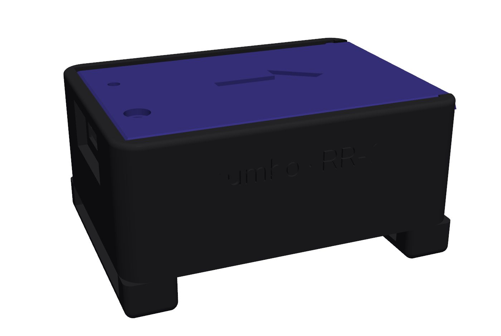

Reloj RR-1
Lee el acelerómetro y el giroscopio a 50 Hz, ventanea la señal y corre un modelo TinyML que reconoce el ejercicio y cuenta repeticiones. Solo envía eventos por Bluetooth, no la señal cruda.

| Electrónica | Seeed XIAO nRF52840 Sense, IMU LSM6DS3TR-C de 6 ejes |
| Conexión | Bluetooth LE 2.4 GHz |
| Carcasa | v2.2, PLA impreso en 3D, 3 piezas, 40.7 × 30.8 × 20.1 mm, ≈ 20 g |
| Batería | Li-Po 3.7 V, 250 mAh, carga por USB-C |
| Correa | Nylon con velcro, muñeca de 135 a 202 mm |
TensorFlow Lite MicroPythonArduino / mbed